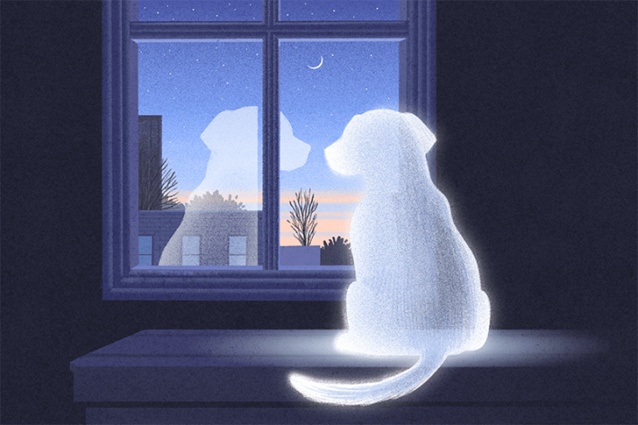
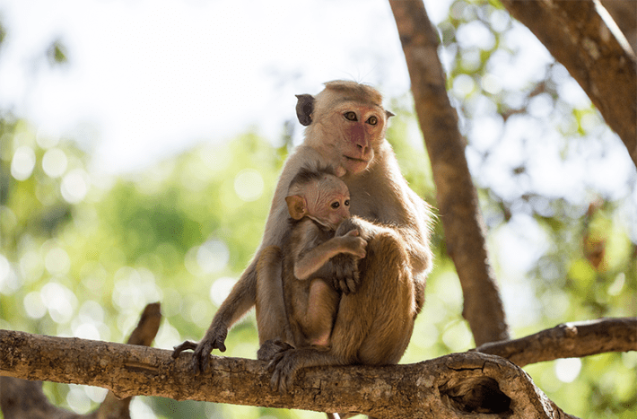
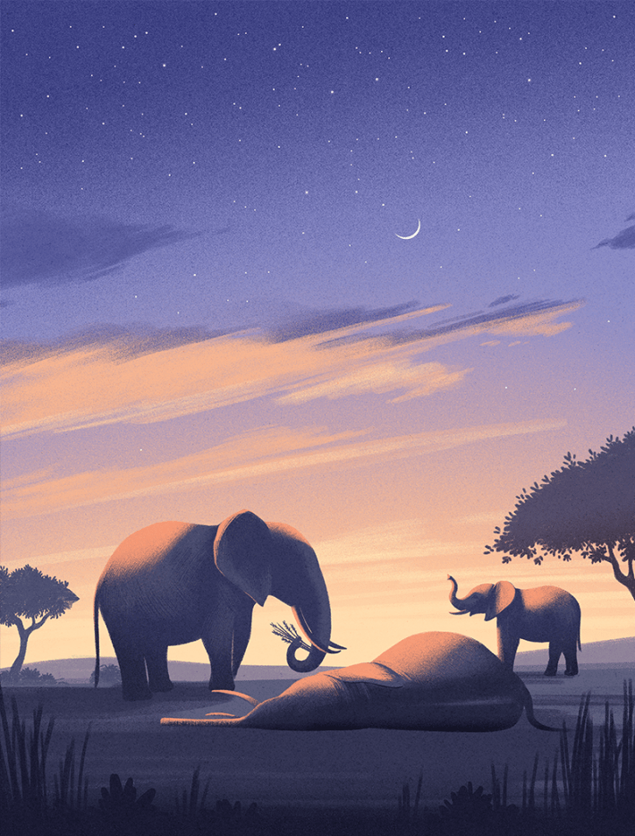
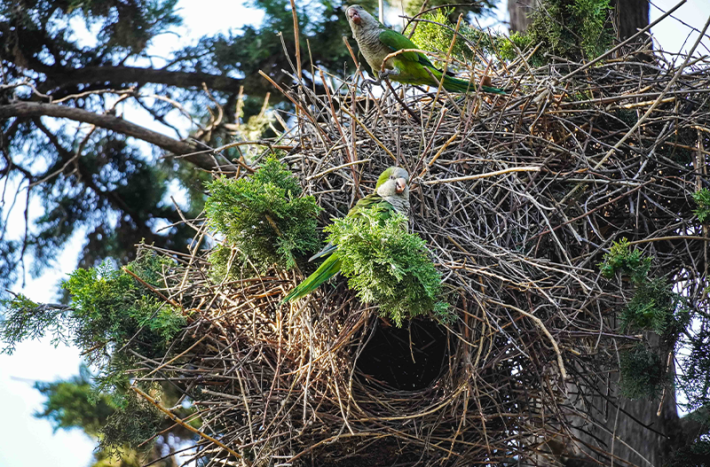

How do animals understand death? That is the question animating this story, which convention dictates I start with an anecdote. But which one? While working on the story a friend told me how his dog saw his closest canine friend run over; the dog becomes disconsolate and agitated whenever they pass the street where it happened. My algorithms surfaced a story about a grief-stricken widower goose who found new love. Someone I follow on social media argued that it’s ethically acceptable to kill animals because they don’t know what death is. I read about a primatologist who runs an animal sanctuary in Costa Rica; every year, a monkey she rescued brings her latest baby to the sanctuary for introductions, but one year the monkey brought a dead baby. Perhaps she hoped a human who once helped her could help again. There was nothing the primatologist could do, though, and after several hours the mother monkey, seeming to admit defeat, screamed.
Nautilus premium members can listen to this story, ad-free.
Nautilus members can listen to this story.
I read dozens of scientific papers—about a mother dingo who carried her dead pup for days, elephants who appear to bury their dead, dolphins who would not let a deceased podmate sink—and debates about how those behaviors should be interpreted. I often did so while cradling my cat Maya, then dying from kidney disease, and thought sometimes of Ingmar, my cat who died last winter from cancer. On the final night of her life, her body hollowed, she summoned the energy to visit her favorite spots, as if paying them a last visit. I thought often about the inevitable death of those I love, which troubles me constantly. I thought sometimes about my own death, which for now is less of a concern. I attended the passing of a goat named Caramel at the sanctuary where I volunteer. Goats have very large pupils, and near the end, as he lay on his side, they were like galaxies.
How much of what matters most in our experience of life is found not in what is unique to us, but in what we share?
The conventional wisdom, among scientists and much of the public as well, holds that animals know little about death. They perceive it, obviously, and may distinguish between dead and alive, but do not grasp it. When a rabbit runs from a fox, then, they flee pain rather than the end of experience. The successful fox, for his part, knows that his prey is immobile, not that they have ceased living. They have no concept of death; it is not part of their mental models, much less a source of anguish or concern or motivation. Or so the thinking goes.
“Mortals are they who can experience death as death. Animals cannot do this,” wrote the philosopher Martin Heidegger. “The knowledge of death is reflective and conceptual, and animals are spared it,” pronounced anthropologist Ernest Becker in The Denial of Death. Becker was notably contemptuous of animals—“Inside they are anonymous,” he wrote. “They live and they disappear with the same thoughtlessness”—but even Charles Darwin, who embraced the mental commonalities between humans and other animals, thought them incapable of understanding that they could die.
For all that people now appreciate the minds of other animals, understanding death has remained a clear divide. In the last few years, though, more scientists have turned their attention to the subject. They argue that some exceptionally intelligent creatures can indeed comprehend death. The comprehension might be rudimentary compared to that of a typical 21st-century adult, but it’s close enough to blur the divide. And some researchers and scholars want to go even further: Understanding death, they argue, is not so complicated, is meaningful even in simpler forms, and may be shared by many creatures rather than just a few.
Far from being a divide, a knowledge of death may be something we have in common with other animals. Rather than framing this in terms of how their understandings resemble our own, we might consider how ours resemble theirs. In doing so we are confronted by a question with implications for how we relate to animals, and indeed to ourselves: How much of what matters most in our experience of death is found not in what is unique to us, but in what we share?
In late November of2008, Pansy, the elderly chimpanzee matriarch of a small troop living at a safari park in the city of Stirling, Scotland, fell ill with a respiratory virus. She was already in her 50s—ancient for a chimpanzee—and not strong enough to recover. Patsy started nesting on the ground instead of climbing up to the chimps’ usual sleeping platforms. The other chimps followed suit and started sleeping on the ground beside her.
An afternoon came when Pansy clearly wouldn’t live much longer. She found the strength to pull herself up to her platform one last time, lying down in a nest her daughter made the previous night. Her breathing was now labored; the end was near. The chimps’ caretaker thought about removing Pansy from the group and euthanizing her, but decided that would be traumatic. He also remembered the video cameras installed over the platforms for a research project on chimpanzee sleep patterns. He turned them on, thus recording the chimpanzees’ behaviors at the end of Pansy’s life and the hours following her death.

Chimpanzee deaths had been observed a few times before, but never in such intimate detail. “When we looked at the videotapes, I was just stunned,” recalls James Anderson, a primatologist at Kyoto University who studies primate cognition. “Nobody had ever seen this precise moment, and it was clear that the surviving chimpanzees understood that something momentous had happened.”
As night fell, the three members of Pansy’s small troop were unusually attentive. They groomed and caressed her with unusual frequency. They peered into Pansy’s face as her breathing slowed and then stopped, at which point they gently shook her body. One of them, named Chippie, pounded on her chest—and then, when Pansy did not move, ran away. They slept poorly that night; Rosie, Pansy’s daughter, stayed up late and then slept beside her mother’s body, while the other two chimps huddled together and groomed one another as much that night as they would over the course of a month. Chippie “attacked” Pansy three more times—although those interactions could just as easily be interpreted as denial or anger, or an attempt to rouse her, wrote Anderson and colleagues in an analysis of the event, which was published in the journal Current Biology.
The next day zookeepers removed Pansy’s body. The chimps were “profoundly subdued,” wrote Anderson’s team, and for a week afterward they avoided the platform on which she had died. For weeks after that the chimpanzees remained subdued; they were lethargic, ate less than usual, and were unusually quiet. By all appearances they seemed to be grieving—not just the absence of Pansy, but her death.
“Without death-related symbols or rituals, chimpanzees show several behaviors that recall human responses to the death of a close relative,” wrote the researchers. “Are humans uniquely aware of mortality? We propose that chimpanzees’ awareness of death has been underestimated.”
To understand death is to know that you can die; and that you and everyone else will die.
That this was a tentative, controversial claim to make about humanity’s closest living relative speaks to just how radical the idea was in scientific circles. Some scientists pushed back: Though Anderson and colleagues were careful to say the chimps’ behavior could be evidence of awareness of death, not that it was, they accused Anderson of careless, anthropomorphic speculation.
Controversial as it was, though, the idea had entered the realm of serious consideration. It catalyzed the field of comparative thanatology, as the scientific study of death-related cognition, emotion, and behavior in other animals is known. Scores of studies have since been published. We are still far from knowing what they think, but it helps to start by reflecting on what it means to understand death.
It is not the same thing as recognizing death. Many ants remove dead kin from their colonies, but this is a reflexive rather than reflective process. Dab a living ant with oleic acid, a chemical produced by decomposition, and their nestmates will carry them out even as they struggle. No true understanding is involved. In a similar vein, opossums and hognose snakes feigning death to escape from predators need not realize they are feigning death. They’re simply performing an instinctive set of movements.
In humans, by contrast, psychologists have codified a mature concept of death as containing several components: non-functionality, irreversibility, causality, universality, personal mortality, and inevitability. To understand death is to know that it ends physical and mental functions; that the dead cannot return to life; that death is caused by the breakdown of life-sustaining processes; that all living beings can die; that you can die; and that you and everyone else will die. This understanding can have more layers, such as belief in an afterlife, and the ostensibly immature understandings possessed by children are a subject to which we’ll return, but it’s a foundational framework.
Most scientists who study the topic would agree that no animal has this level of understanding, though a few species—certain great apes, elephants, and some cetaceans—have the cognitive sophistication to grasp non-functionality, irreversibility, and perhaps causality and a limited sense of universality. Beyond them, though, understanding death in any meaningful way is considered rare or nonexistent. Certainly it’s not something one would expect to find.
Yet to Susana Monsó, a philosopher and author of Playing Possum: How Animals Understand Death, the belief that death is difficult to understand is mistaken. It overemphasizes the mature human understanding of death. Instead Monsó proposes that only two components suffice for what she calls a “minimal concept of death”: irreversibility and non-functionality. To recognize that an animal no longer does what they used to, and realize that this state is permanent, is the essence of understanding death. It is at once simple and profound, and the cognitive requirements are basic.
Mechanisms for distinguishing between animate and inanimate entities emerged early in evolutionary history and are widespread among animals. Add the ability to generate expectations about how an animal ought to behave, then an encounter with a dead body, and voilà: It is an opportunity to recategorize that body from one who does what is expected of them to one that does not, and will not again. A concept of death can be born.
“From my point of view, death is nothing but broken bodies,” says Antonio Osuna-Mascaró, an animal cognition researcher at the University of Veterinary Medicine Vienna. Take away the big ideas and mythology, he says, “and we end up facing death as death should be looked at in nature. We find out that understanding death is recognizing when a body is broken.”
This minimal concept is a foundation, say Monsó and Osuna-Mascaró. Many animals will be able to add other aspects of death, such as causality and a knowledge of their own mortality—not necessarily that they will die, but that they could—yielding an even richer awareness. How many species are capable of this? “It’s too early to give a well-grounded answer to that question,” Monsó says. “But definitely way more species than scientific and philosophical history would have you believe.”
James Anderson thinks dolphins and elephants are capable of understanding death at a level “roughly equivalent to a human adolescent.” When I asked what he thought of Monsó’s ideas, he agreed that non-functionality and irreversibility are likely the first components of death that an animal may grasp. But to him, this minimal concept of death contains such a dim impression of what is being understood that it barely counts as an understanding. To be meaningful, it needs something more: a grasp of causality, perhaps of universality.
As Anderson answered, I was reminded, however, of my experiences with death as a child—first a rabbit, later a babysitter. I understood those deaths in terms of irreversibility and non-functionality, with only a faint knowledge of what caused them and none of death’s universality. By the standards of developmental psychology my understanding was far from mature—yet those were still powerful experiences. “I don’t think universality is required at all. I don’t think inevitability is required at all. There are so many things about the concept of death that I think are superfluous. They are not required for having a concept of death that is meaningful to us,” says Osuna-Mascaró.

A MOTHER’S LOVE:A mother macaque and her infant embrace. These deep emotional bonds likely explain why many primate mothers continue to carry their babies, even after the babies have died. Photo by Amil San / Shutterstock.
Interestingly, when researchers in the early to mid 20th century studied how children understood death, they found that children often thought about it in terms of partings in which the departed lived on, but could not return for practical reasons: Heaven was too far away, the coffin was nailed shut. Some children construed death as a sleep from which one could not wake. Which isn’t to say some animals conceive of death this way—although I do wonder—but to illustrate how even a concept of death that contains a faulty grasp of non-functionality and irreversibility, those most elemental components, can be powerful.
Anderson recommended I talk to André Gonçalves, a fellow primatologist at Kyoto University with a particular interest in comparative thanatology. Gonçalves had reservations about the ability of animals to flexibly extend a concept of death from one occurrence to other situations. Humans are especially good at this sort of thinking, Gonçalves said. Though some animals display the necessary cognitive abilities, for many it may be difficult or impossible.
We also talked about anthropocentrism—the tendency to think of humans as superior to and fundamentally different from other animals—and whether it has made comparative thanatologists reluctant to recognize understandings of death in other animals. To Gonçalves, being open to the possibility that other animals can understand death is the opposite of anthropocentric. His colleagues are simply studying this phenomenon rigorously. It is difficult to measure and to interpret; even highly suggestive behaviors have many possible explanations. Seeming anthropocentrism is actually rigor.
What strikes me as anthropocentric, however, is not some sense of human superiority among comparative thanatologists, or close-mindedness to the richness of animal experience, but rather how the default hypothesis is always that animals do not understand death. Why start there, rather than from the position that animals might, or even that they do?
An instructive example of an excessive reluctance—in my eyes—to recognize animal understandings of death involves the discourse around why mammal mothers sometimes carry their infants for days or even weeks after they die. This has been observed in many species, including sea otters, dingoes, and some cetaceans, but is especially well-documented in primates. At a glance it seems maladaptive: It’s tiring, makes it harder to forage, and leaves mothers more vulnerable to predation. What, then, could explain it?
Many hypotheses have been floated. The most obvious is that a mother’s love for her baby is not sundered by death. Mothers still care; they are grieving. There are other possible explanations, though.

Maybe carrying one’s dead baby is a form of practice that improves future mothering. Perhaps, for primates in societies where females benefit from the status conferred by motherhood, they carry the corpse in order to keep getting extra grooming and support. It has been suggested that some primates are attracted to anything mammal-like, whether it’s a living baby or a corpse or just a stick with hair attached. In fact mothers may not even recognize their baby any more; they might perceive the corpse as an interesting baby-shaped object. Or it could be that female mammals are innately attracted to infants and want to nuzzle them, dead or alive. In fact, mothers may not even realize their babies have died, especially when the causes are not obvious.
Confronted with these uncertainties, where should one end up? There is no clear scientific answer. My own hunch is that mothers know their babies are dead—perhaps not immediately, but certainly after a few days—and cannot let go, figuratively or literally. It seems the most parsimonious explanation; the one truest to the experience of motherhood. Alecia Carter, an anthropologist at University College London, favors that explanation for the baboons she has studied. In an interview with the Many Minds podcast she called infant corpse-carrying “an extension of maternal care and inability to break the maternal bond.” As for the behavior’s deeper function, Carter said the best explanation “is that it’s a form of grief management.”
An understanding of death is not required to grieve, but it perhaps makes grief more powerful. The presence of grief in animals is also debated, as seen in the famous case of Tahlequah, the orca who held her dead calf above water for 17 days in the summer of 2018, swimming more than 1,000 miles and becoming a global celebrity. Some scientists called this grief; others resisted. They insisted that it was impossible to know for sure and that, lacking this certainty, the default explanation should be that Tahlequah failed to realize her calf was dead and simply hoped she would revive. To think otherwise was a matter of faith, not science.
It was a case study in anthropocentrism. And I would offer this: It is possible to imagine that Tahlequah both grieved her baby’s death and hoped she would revive. Many of us have stood beside the casket of someone we loved, looking for movement. Of course we know they are dead. The desperate, irrational wish to reverse what cannot be reversed is part of our grief.
In early 2024, researchers studying Asian elephants in northern Bengal reported something extraordinary: Five accounts of elephant calves found buried in tea plantation irrigation ditches, with their legs aboveground and pointed toward the sky. The soil around them was patted level. Footsteps and dung deposits showed that the burials were performed by the calves’ herds.
The burials took place at night. Nearby villagers heard loud trumpeting but none witnessed the events. Later autopsies showed the calves were in poor health and died of natural causes, not from drowning in the ditches. Bruise patterns on their bodies suggested they were carried long distances by their legs and trunks. A camera trap snapped a picture of two elephants walking together, one dragging the tiny figure of a calf by her trunk across a plantation’s red earth.
The researchers—Parveen Kaswan, an officer in the Indian Forest Service, and Akashdeep Roy, a political ecologist at the Indian Institute of Science Education and Research—interpreted the burials as intentional. Burial “reflects the care and affection of the herd member(s),” they wrote. Although elephants are celebrated for their intelligence and social complexity, nothing like this had ever been reported. Headlines followed.
In humans, mortuary practices—rituals and customs, such as burial, for disposing of the deceased—emerged roughly 100,000 years ago. Anthropologists consider it a defining moment for Homo sapiens, in which a recognition of death combined with symbolic thought to give deeper meaning to loss and also to life. That elephants might have their own such practices was viscerally powerful.
If an animal did comprehend the inevitability of death, what then?
There were, of course, other explanations. Perhaps the elephants indeed carried their dead calves but lost hold while crossing ditches, then dislodged loose soil from the banks as they tried to recover them. Distinguishing intentional from inadvertent is difficult “unless we directly observe the elephants carrying a carcass to a particular site for ‘burial,’ ” opine elephant biologist Nachiketha Sharma of Kyoto University and Sanjeeta Pokharel, a behavioral ecologist with the Indian Institute of Science.* “We are not dismissing the possibility that elephants can or do bury their dead”—but from what was observed, who could know?
Several years ago, Sharma and Pokharel published three detailed accounts of Asian elephants attending to dead or dying kin. One involved two adult females seen beside the body of an elderly female who died from disease; when forest officials chased them away to inspect the body, they found withered leaves and twigs deposited around the dead elephant’s head. Once again it is tempting to impute some greater significance, some ritual of farewell or gift for the afterlife. Once again it is impossible to know.
“Placing twigs and leaves could be a symbolic gesture. However, there could be other explanations,” say Sharma and Pokharel. Perhaps elephants dropped what was in their mouths, or lost interest in eating, while inspecting the dead elephant. “We can only speculate,” they say. Yet the fact that such speculation is plausible speaks to the marvelous intelligence of elephants and raises the question of how complex their understanding of death could become. Might some elephants comprehend not only that death is the end of the being they once knew, but also that death will someday come, for themselves and for others?
Understanding that oneself could die is arguably not too complicated. Monsó gives the example of a monkey who sees other monkeys die after falling from trees or being eaten by leopards. To associate death with those events, and then extrapolate that more monkeys—including oneself—could experience a similar fate were they to fall or be eaten is not so difficult. It requires induction and analogical reasoning, which are found in many animals, and the opportunity to learn about death from experience, of which nature provides no shortage. Quite a few animals might be able to do this.
What about understanding that one will die, though? As will everyone else? For Monsó, understanding death’s inevitability and the full scope of universality is likely a uniquely human trait, or at least dependent on the ability to talk about it. Modern humans, after all, learn through stories or lessons that death comes to all. Monsó thinks it unlikely that other animal communication systems have the conceptual abstraction necessary to convey this.
An understanding of death is not required to grieve, but it perhaps makes grief more powerful.
Anderson agrees that communicating about death has not yet been documented, but he is open to the possibility. He is fascinated by how chimpanzees and other primates communicate as they attend to their dead. “They are certainly expressing communication about what has happened,” he says. “What we don’t have any evidence of yet—and this will be an amazing step, if that happens—is if there’s some signal,” such as a vocalization or gesture, “that conveys death.” Pokharel and Sharma recorded the trumpeting of elephants beside their dead, and think it possible that elephants speak about death, but this has yet to be studied.
Anderson thinks chimpanzees may be able to learn about death’s universality and inevitability. Pokharel and Sharma say the same about elephants, but “empirically substantiating this would be extremely difficult, if not impossible.”
Yet again we are confronted with the tension—central to comparative thanatology, and indeed to the study of animal behavior—between what may be possible and what can be scientifically ascertained. It is important for scientists to be careful in their empirical claims, but the limits of our measurements should not prescribe the limits of possibility.
And if an animal did comprehend the inevitability of death, what then? The late geneticist Danny Brower hypothesized that awareness of one’s own mortality brings such paralyzing fear and anxiety that it’s an evolutionary dead end. Humanity survived the realization by devising intellectual workarounds. “Man cannot endure his own littleness unless he can translate it into meaningfulness,” wrote Ernest Becker in The Denial of Death. In the 1980s, Becker’s work inspired terror management theory, which postulated that much of human behavior is shaped by a deep-seated fear of death. The theory also distinguished between complex forms of terror management—transcendent values, religious frameworks—and simpler ones, like contributing to one’s community and caring for loved ones.
According to psychologist Tom Pyszczynski, one of the theory’s architects, there are three cognitive requirements: the ability to think symbolically, to think about the future, and to reflect upon one’s own life and self. Forms of these capacities are found in many species. I asked Pyszczynski: Might some animals engage in mental activities akin to what is described in his theory? Not the complex forms, but the simpler ones. Might a monk parakeet find some sense of greater purpose in adding sticks to the car-sized, multi-generational colonial nests in which they live? Could a gorilla groom a friend with extra care, knowing such moments are finite?
“That is certainly possible. I don’t think we know,” said Pyszczynski. He is uncomfortable speculating about the inner lives of other animals, but “every decade or so, we learn that things are a lot more complicated—and other animals are more sophisticated and capable—than we used to think.”
There exist caves used continuously for thousands of years by hibernating bears. Inevitably some bears die during hibernation and so the caves are full of skeletons. Might not some bears—creatures whose intelligence is little-studied but may compare to that of great apes—look upon and smell those remains, grasp their ancience even as they feel time’s passage in their own bones, and intuit what must happen? How might a monk parakeet conceive of the greater good? Those are speculative, possibly unknowable questions, but others are more immediate and tractable.
At his lab at the University of Veterinary Medicine Vienna, Osuna-Mascaró is developing methods for testing whether Goffin’s cockatoos comprehend irreversibility and non-functionality. Another question is whether that understanding can be flexibly applied, and also how readily it is acquired. If a fox can come to understand death as they hunt mice, how many must they kill for the lesson to sink in? Can they make inferences from when they chased beetles as a kit? And perhaps researchers could adapt methods used in studies of terror management theory, in which people are presented with reminders of death as a way of assessing whether it’s on their mind and how they cope. “Expose the animal to a dead conspecific and then see if that leads them to engage in more nurturing or protective behavior,” suggests Pyszczynski.
Many more species need to be studied, too. Comparative thanatology has focused mostly on primates, with elephants and cetaceans also receiving some attention. Few other animals have been studied, a disparity that reflects circumstance rather than potential. Parrots are obvious candidates, says Osuna-Mascaró. Anderson mentioned wildebeests and monogamous birds. A few years ago a camera trap set up for an 8-year-old Arizona boy’s science fair project recorded a herd of collared peccaries who visited a fallen comrade for 10 days, sleeping beside her body and defending it from coyotes. It was the first such observation in peccaries and a testament to how much remains to be learned.

OPEN QUESTIONS: Nobody has yet studied whether monk parakeets understand death—but as long-lived, highly intelligent animals with complex social relationships, their life history is conductive to learning of it. Photo by Danszabo / Shutterstock.
There will be limits to what can be studied. Some are ethical: Gonçalves, for example, balks at playing recordings of a deceased chimpanzee to her family in order to see how they react. Other limits are fundamental. “There are certain questions that we can ask, but that we’re not going to be able to address scientifically,” says Monsó. “That’s okay.” Is there any way to truly know whether my cat Ingmar, visiting her old haunts on her final night, knew the end was near? Or was she simply seeking psychological comfort in a time of great pain? I want neither certainty nor the rigorous weighing of competing hypotheses. And even what we do understand is necessarily partial; an ocean exists between scientific description and lived experience. It may be true that grief emerges from dissonance between a brain’s model of the world and its new reality, but those words are incommensurate with the experience.
What should we do with our knowledge and our uncertainties? “One question is paramount,” says anthropologist Barbara King. “How might research around animal responses to death compel us to be better and do better for animals?”
There are low-hanging implications. Anderson mentioned the importance of allowing chimpanzees in captivity to spend time with deceased kin, rather than immediately removing the body, so that they might understand what has happened and have some sense of closure. Monsó made the same point about companion animals.
The most important implications, though, are in how we relate to animals. In the study of calf burial in Indian tea plantations, the researchers described how local people’s attitudes reflect their appreciation of elephant sentience. To believe they bury their calves and mourn their dead “strengthens the morale of coexistence,” the researchers wrote. People there care about elephant conservation less because of their ecological roles than because of the ethical regard due to them as intelligent beings.
King stresses that understanding death should not be a litmus test. Every being deserves our respect. And given how many of us spend much of our lives oblivious to death, we ought not find animals wanting for being incapable of more. But to know what death may mean to other animals is to take each life seriously and to honor them. We are called, says King, to consider the lives we treat so casually: animals kept in captivity for entertainment, or killed for the sake of knowledge or a soon-forgotten meal, whose suffering may be compounded by an awareness of death and loss. Where people follow those ethical implications will vary, but that animals could share with us some understanding of death, not necessarily identical to our own but similar in some ways—and in ways that matter deeply to our own experience—is grounds for a deeper kinship.
Which is not to deny that some human understandings may be singular. If anything is truly unique to us, I think, it is our ability to refract death through our extraordinary capacity to imagine possible futures and alternate histories. Perhaps no other animal is capable of being annoyed at a loved one’s irritating habit, then feeling sadness at the thought of how someday that habit will be remembered with affection and regret. Perhaps no other animal can be consumed by how death could have been averted, or what they might have done differently. Perhaps no other animal judges themselves for this, or forgives.
What is more important, though: the differences between how humans and other animals understand death, or the similarities? To me it is the latter. The common essence of life’s preciousness and the finality of its loss.
In the thanatological literature, much attention is given to the ritual trappings of death: the ceremonies, the mythology, the symbolism. Those, it is said, are deeply human. I think about the peccaries’ vigil and of the funerals I have attended and will. Long after the funeral is over, we still stand by the grave. 
Footnote
* Sharma and Pokharel commented jointly by email; so their statements are attributed to both.